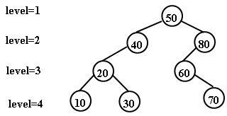
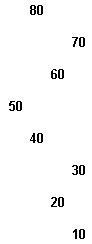
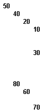
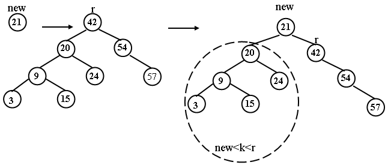
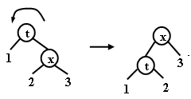
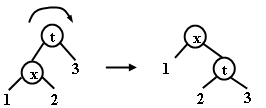
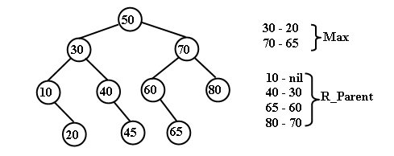
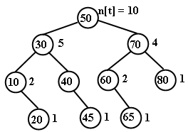

|
|
||||||
|
Поиск предыдущего по ключу узла в дереве для заданного узла x Поиск К – го по порядку узла BST – дерева Разбиение BST – дерева на два дерева
Обход BST – дереваНаиболее общей функцией обработки деревьев является обход всех узлов дерева, когда для выполнения некоторой операции на дереве, требуется выборка значений из узлов дерева. В зависимости от алгоритма операции возможна одна из трех схем обхода:
Рекурсивный алгоритм префиксного обхода:t_L_ R ( t )
1.
2. if t = nil then return 3. операция над узлом t 4. t_L_ R ( left[ t ] ) 5. t_L_ R ( right [ t ] ) 6. return Над деревом можно выполнять операции, имеющие не рекурсивный алгоритм. Но для этого операции должны использовать собственный стек, чтобы иметь возможность вернуться к ранее пройденным, но не обработанным узлам. Итеративный алгоритм префиксного обхода:t_L_ R ( root )
1.
2.
3. Push( S, root ) 4. while S не пуст 5. do t ← Pop(S) 6. операция над узлом t 7. if right[t] ≠ nil 8. then Push ( S, right [ t ] ) 9. if left[t] ≠ nil 10. then Push ( S, left [ t ] ) 11. return Рекурсивный алгоритм инфиксного обхода:L_t_ R ( t )
1 2 if t = nil then return 3 L_t_ R ( left[ t ] ) 4 операция над узлом t 5 L_t_ R ( right [ t ] ) 6 return
Итеративный алгоритм инфиксного обходаL_t_ R ( root )
1.
2.
3. Push(S1, root) 4. while S1 не пуст или S2 не пуст 5. do if S1 не пуст 6. then 7. t ← Pop(S1) 8. Push(S2,t) 9. if right[t] ≠ nil 10. then Push(S1, right [t]) 11. else 12. t ← Pop(S2) 13. Push(S3,t) 14. if left[t] ≠ nil 15. then Push(S1, left [t]) 16. while S3 не пуст 17. do 18. t ← Pop(S3) 19. операция над узлом t 20. return
Рекурсивный алгоритм постфиксного обхода:L_ R _t ( t )
1 2 if t = nil then return 3 L_ R _t ( left[ t ] ) 4 L_ R _t ( right [ t ] ) 5 операция над узлом t 6 return
Итеративный алгоритм постфиксного обходаL_ R _t ( root )
1.
2.
3. Push(S1, root) 4. while S1 не пуст 5. do 6. t ← Pop(S1) 7. Push(S2,t) 8. if left[t] ≠ nil 9. then Push(S1, left[t]) 10. if right[t] ≠ nil 11. then Push(S1, right[t]) 12. while S2 не пуст 13. do 14. t ← Pop(S2) 15. операция над узлом t 16. return
Существует еще одна схема обхода узлов дерева – по уровням, при которой узлы посещаются сверху вниз и слева направо на одном уровне. Обход по уровням можно получить из предыдущей операции инфиксного обхода, заменив в ней стек на очередь FIFO. Traverse ( root )
1
2 3 Insert( Q, root ) 4 while Q не пуста 5 do t ← Deque ( Q ) 6 операция над узлом t 7 if left [t] ≠ nil then Insert ( Q, left [ t ] ) 8 if right[t] ≠ nil then Insert( Q, right [ t ] ) 9 return
Рассмотрим использование операций обхода дерева для выполнения быстрого вывода дерева. Например, схема инфиксного обхода удобна для вертикальной распечатки дерева. Show( t, level )
1
2
3 if t = nil 3 then return 4 Show ( right [ t ], level+1 ) 5 for i← 0 to level 6 do печать "_" 7 печать key[t] и data[t] 8 перевод курсора на начало следующей строки 9 Show ( left [ t ], level+1 ) 10 return
Например, дерево  будет выведено на экран в виде:  Если распечатать дерево по схеме префиксного обхода, то получится схема печати, аналогичная распечатке дерева каталогов в файловой системе.
Show_Down ( t, level ) 1 if t = nil then return 2 for i ← 0 to level 3 do печать "_" 4 печать key [ t ] и data [ t ] 5 перевод курсора на начало следующей строки 6 Show_Down ( left [ t ], level+1 ) 7 Show_Down ( right [ t ], level+1 ) 8 return
Вид дерева на экране следующий:  Вставка в корень BST – дереваВ стандартной реализации BST-дерева каждый новый элемент вставляется в нижнюю часть дерева и становится листом дерева. Иногда целесообразно вставлять новый элемент в корень дерева. В результате вновь поступившие элементы располагаются ближе к корню дерева. Такая схема особенно целесообразна, когда приложение чаще всего обрабатывает последние элементы, недавно поступившие в структуру. Благодаря тому, что они находятся ближе к корню, среднее время поиска этих элементов снижается. Первое решение, которое приходит на ум - сделать новый элемент новым корнем, а старый корень пристроить в качестве правого или левого сына в зависимости от соотношения ключей нового элемента и старого корня. Например:  Но проблема заключается в том, что в левом или правом поддереве могут оказаться ключи, нарушающие упорядоченность дерева. Поэтому нужна определенная перестройка дерева. Чтобы обеспечить упорядоченность BST-дерева, при включении используется несколько иная схема. Новый элемент включается, как и при стандартной схеме в качестве листа, но затем путем поворотов поднимается в корень. Повороты осуществляются снизу вверх для каждого узла, лежащего на пути от нового листа к корню. Могут использоваться левые и правые повороты.
Левый поворот: L( t ) 1 x ← right [ t ] 2 right [ t ] ← left [ x ] 3 left [ x ] ← t 4 return x
Правый поворот
R ( t ) 1 x ← left [ t ] 2 left [ t ] ← right [ x ] 3 right [ x ] ← t 4 return x
Рекурсивная функция вставки узла x в корень:Root_Insert(t, k, data, inserted)
1.
2.
3.
4.
5. if t = nil 6. then inserted ← TRUE 7. return Create_Node(k, data) 8. if k = key[ t ] 9. then inserted ← FALSE 10. return t 11. if k < key[t] 12. then left[t] ← BST_Root_Insert(left[t], k, data, ins) 13. inserted ← ins 14. if ins = TRUE 15. then return R(t) 16. else return t 17. else right[t]←BST_Root_Insert(right[t], k, data, ins) 18. inserted ← ins 19. if ins = TRUE 20. then return L(t) 21. else return t
Можно заметить еще одно преимущество такой вставки - балансировка высоты левого и правого поддерева, что оправдывает дополнительные затраты на вращения. Поиск предыдущего по ключу узла в дереве для заданного узла xОперация поиска предыдущего по ключу узла чаще всего используется для организации просмотра узлов дерева в порядке убывания ключей. Предыдущий узел отыскивается в левом поддереве заданного узла x, если оно есть, или как ближайший правый предок на пути от корня к узлу x.
Рекурсивный алгоритм поиска предыдущего по ключу узла:BST_Predecessor( root, x )
1.
2.
3. if left [x] ≠ nil 4. then return Max ( left [x] ) 5. else return R_Parent ( root, x )
Вспомогательные алгоритмы для поиска предыдущего элемента – поиск максимального по ключу узла в левом поддереве (Max) и поиск ближайшего правого родителя для заданного узла дерева (R_Parent). Max( t ) 1. if t = nil 2. then return nil 3. while right [ t ] ≠ nil 4. do t ← right [ t ] 5. return t
R_Parent(t, x)
1.
2.
3. if t = x then return nil 4. if key[x] > key[t] 5. then rp ← R_Parent( right [ t ], x) 6. if rp ≠ nil then return rp 7. else return t 8. else return R_Parent( left [ t ], x)

Аналогично выглядит алгоритм поиска следующего по ключу узла в дереве для заданного узла x – BST_Succsessor. Алгоритм является зеркальным по отношению к алгоритму поиска предыдущего узла. Необходимо заменить ссылки left[x] на right[x] в алгоритме BST_Predecessor, а также заменить вспомогательные алгоритмы на зеркальные алгоритмы Min и L_Parent.
Поиск К – го по порядку узла BST – дереваОдной из причин распространенности BST-деревьев является эффективная поддержка задач о порядковых статистиках: сортировки, определения порядкового номера элемента, количества меньших или больших элементов, минимального или максимального значения, k-го по порядку элемента. Сортировка выполняется при поперечном обходе узлов дерева. Обход сопровождается спуском по дереву, поэтому можно ожидать, что затраты определяются логарифмической зависимостью. Для поддержки многих из выше перечисленных задач в узлы BST-дерева вводится дополнительный параметр n[t], отражающий количество элементов в поддереве, корнем которого является узел t. Такое BST-дерево называется порядковым деревом. Параметр n[t] модифицируется любой операцией, изменяющей дерево(BST_Insert, BST_Delete, L(t), R(t)). Это дополнение может снизить производительность операций вставки и удаления, увеличить затраты памяти. Но если задачи о порядковых статистика важны, то приходится идти на эти затраты. 
Для операции выбора k-го по порядку элемента Select_K можно использовать идею, аналогичную бинарному поиску в массиве. Для отыскания в порядковом дереве элемента с k-м ключом проверяется количество узлов в левом поддереве корня. Если там имеется k узлов, то возвращается корневой элемент. В противном случае, если левое поддерево содержит более k узлов, рекурсивно отыскивается k-й элемент в левом поддереве. Если левое поддерево содержит m узлов и m<k, то k-й элемент является (k-m-1)-м наименьшим элементом в правом поддереве. В этом случае рекурсивно отыскивается (k-m-1)-й элемент в правом поддереве.
BST_Selectk( t, k )
1.
2.
3. if t = nil then return t 4. if left [ t ] = nil 5. then m ← 0 6. else m ← n [left [t] ] 7. if m > k 8. then return BST_Selectk ( left [ t ], k) 9. if m < k 10. then return BST_Selectk ( right [ t ],k - m - 1) 11. return t Разбиение BST – дерева на два дереваОперация заключается в спуске по дереву до K–го узла и затем подъему по дереву с выполнением ротаций для перемещений этого узла в корень. После подъёма можно разбить дерево на два, оторвав от нового корня левое или правое поддерево. Иллюстрация этого процесса для К = 4 приведена ниже:
|
||||||
|
|